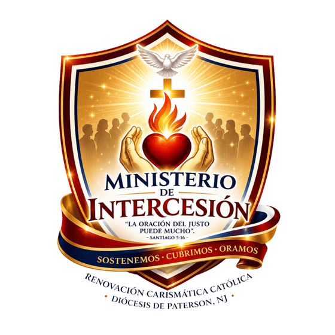

El corazón orante de la Renovación Carismática Católica de la Diócesis de Paterson.
El Ministerio de Intercesión es el corazón orante de la Renovación Carismática Católica de la Diócesis de Paterson. Su misión es sostener en oración a toda la comunidad diocesana, los eventos, los líderes y las familias, ejerciendo el sacerdocio bautismal común a todo cristiano.
Su fundamento doctrinal cita el Catecismo (CIC 2634-2636) sobre la intercesión como oración que nos conforma a la de Cristo, y a la RCC Hispana sobre las categorías de personas por quienes se debe interceder — autoridades, quienes sirven al Señor, enfermos y más (1 Tim 2:1-2, Stg 5:14-16). Fundamento bíblico adicional: Rm 8:26, Ef 6:18, Mt 5:44, Gn 18:16-33 (Abraham), Éx 32:30-32 (Moisés), Jn 2:3-5 (María en Caná).
Sus miembros oran antes, durante y después de cada actividad diocesana, reciben peticiones de la comunidad, sostienen a los servidores, interceden por enfermos y familias en crisis, y guardan vigilia en momentos especiales como Pentecostés Diocesano y los Seminarios de Vida en el Espíritu. Operan en equipos con horario de oración, registro de peticiones y confidencialidad absoluta — sin protagonismo ni visibilidad.
“Una comunidad cristiana vive de la intercesión de sus miembros; de lo contrario, muere.”
— Dietrich Bonhoeffer, citado en la Guía Pastoral del Ministerio de Intercesión, RCC Paterson NJCoordinadora
Director Espiritual